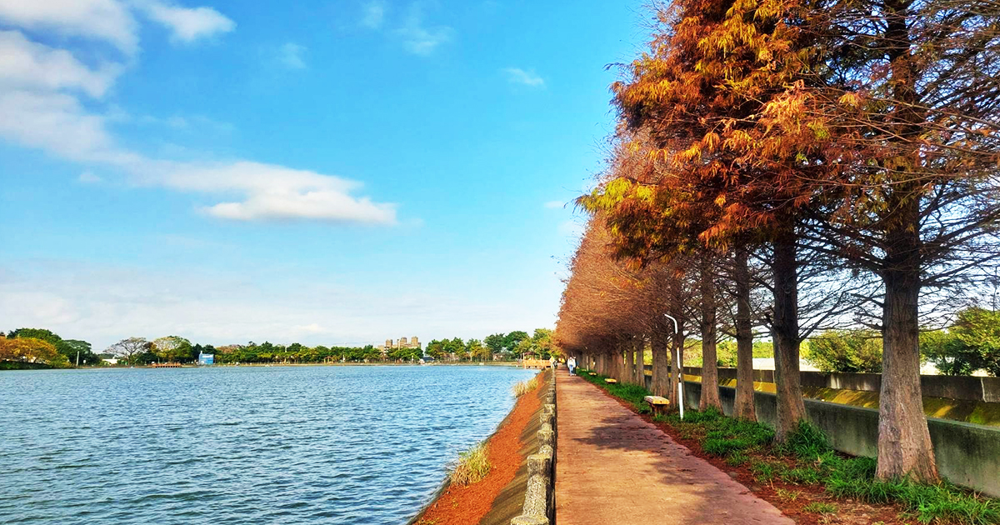
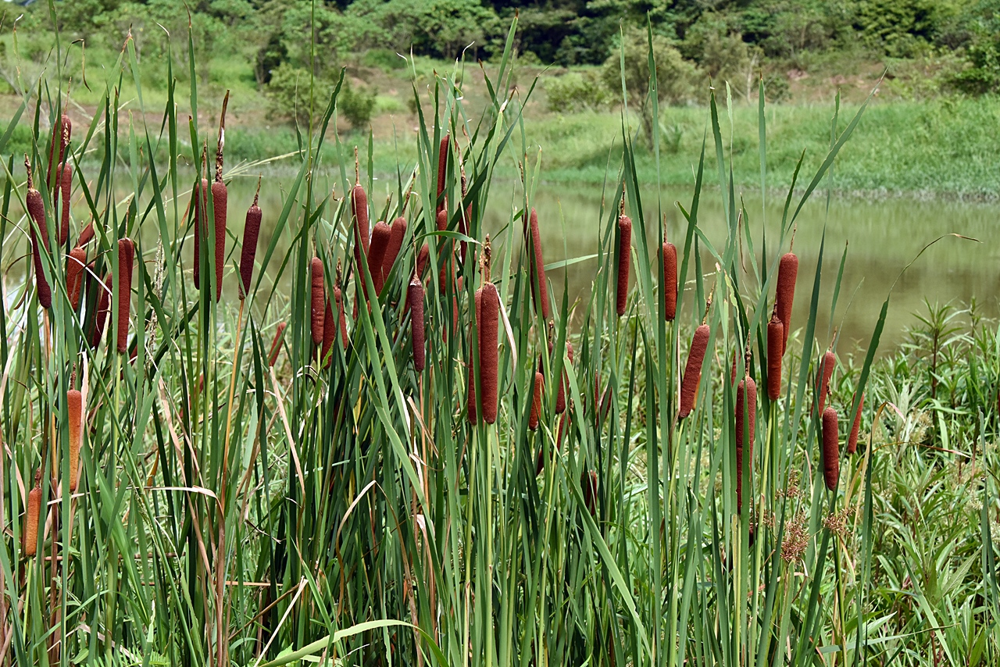

埤塘與護岸植物調查
指標性景觀：環湖落羽松林
霄裡大池最廣為人知的植物景觀，莫過於沿著大池北側與西側堤岸綿延種植的數百棵落羽松林（Bald Cypress）。每年春夏之際滿樹翠綠；中秋過後，綠葉開始轉為亮眼的金黃色；直至深冬，整片松林染成濃郁的紅褐色，成為帶動八德地方觀光轉型與經濟價值的最指標植物。

圖片來源：下一站，天涯
挺水植物與原生物種現況
大池周邊的水岸邊緣仍保留並復育了豐富的挺水植物與浮水植物。現地可以觀察到高大的蘆葦與香蒲（水燭），牠們扎根於岸邊泥土中，能有效發揮固岸、減少泥沙沖刷的功能，同時也為紅冠水雞等水鳥提供了絕佳的產卵隱蔽與築巢空間。此外，偶爾也能在岸邊濕地尋獲臺灣特有原生物種大安水蓑衣的蹤跡。

圖片來源：Ecoacademia